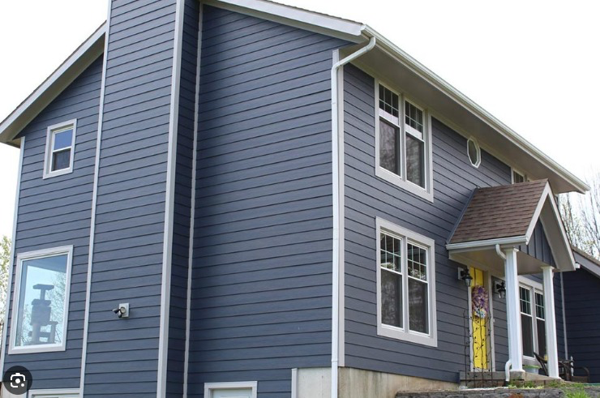
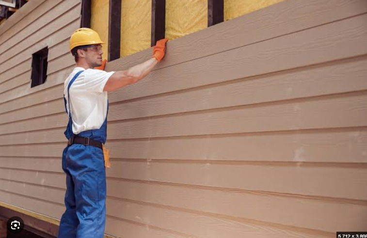

New Siding Installation
For homes that need a new exterior finish.

Space Up Construction · Massachusetts
From siding replacement to drywall repair, plaster, trim, and painting, Space Up handles the work from surface prep to final finish.
Siding
Loose, cracked, faded, or damaged siding is a good reason to have the exterior checked before another Massachusetts winter. Space Up handles siding installation and replacement for residential properties, with the work scoped around the condition of the home.
For homes that need a new exterior finish.
For existing siding that is worn, damaged, or ready to be updated.
The surrounding finish work is considered as part of the project so the completed exterior does not look patched together.
Painting
Cracks, patches, damaged drywall, and uneven plaster can still show after a new coat of paint. Space Up can handle the wall preparation and repairs first, then move into the painting work.
Walls, ceilings, trim, and other interior surfaces that need a fresh, consistent finish.
Exterior surfaces that need repainting after the proper preparation work.
Patching, drywall repair, plaster work, and wall preparation can be handled before painting begins.
Wall Repair
Space Up handles drywall installation and repair, plaster work, and wall preparation for areas that need to be rebuilt or properly finished.
Call About Wall RepairsFor damaged walls, ceilings, new sections, and areas that need replacement.
For walls with cracks, damaged areas, or surfaces that need repair before the final finish.
Repairs are completed before painting so the finished surface starts with a properly prepared wall.
Finish Carpentry
Trim and other wood details stand out when cuts, joints, and transitions are poorly finished. Space Up handles finish carpentry as part of residential renovation and finishing work, including the wood details needed to complete the room.
Request a QuoteMultiple Services
A room may need drywall repair before painting. An exterior project may include siding and finish work. A renovation may need plaster, trim, and paint before it is actually done.
Projects
Illustrative siding images.

From Quote to Schedule
Tell us which service you need and where the property is located.
We’ll go over the areas that need repair, replacement, preparation, or finishing.
Once the scope is defined, the next steps and scheduling can be arranged.
Yes. Space Up handles residential siding installation and replacement in Massachusetts.
Yes. Painting services are available for interior and exterior residential projects.
Yes. Drywall repair and wall preparation can be included before the painting work begins.
Yes. Space Up handles plaster repair and preparation for walls that need correction before finishing.
Yes. Finish carpentry can be included for the wood details and trim needed to complete the project.
Yes. If the project needs siding, painting, drywall, plaster, or finish carpentry, include the full scope when requesting a quote.
Call Space Up directly or send the contact form with the service you need and basic information about the project.
Request a Quote
Send the basic project information and the Space Up team will contact you to discuss the scope.
(508) 474-9407Space Up Construction
Call Space Up or send the form with the work that needs to be done at your home.